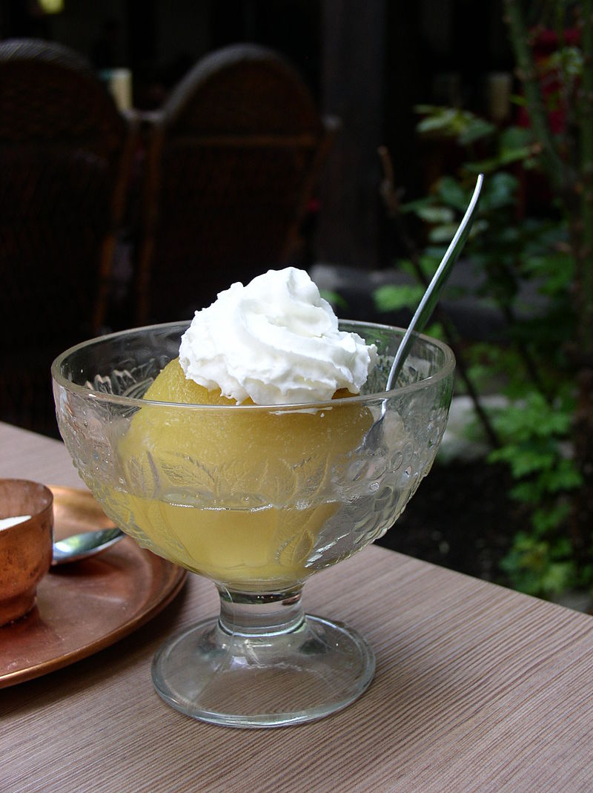

Tufahija

Recipe for desert made from apples and whiped cream.
Ingdredients
- Eight medium sized apples
- 200 grams of sugar
- 80 grams of walnuts
- one egg white
- 300 cl of sweet cream
- one liter of water
- 20 grams of vanilin sugar
Directions
- Peel the apples and remove the middle part while keeping the apples whole.
- Pour water in the pot,add 100 grams of sugar and put the apples. Cook for 15 minutes.
- Remove the apples and add the remaining sugar and apple peel.
- Fill the middle of apples with ground walnuts and sweet cream.
- Make cream from the egg white.
- Pour the remaining water over the apples and put the cream on top.